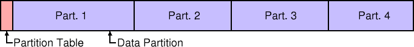

| Technical |
Long ago, in the DOS years, disks were small. There were no partitions and filesystems simply used the whole disk. As disks became larger, this wasn't the most practical solution. By dividing the disk into partitions, it improved flexibility. The only exceptions, now, are removable media, e.g. floppies, Zip disks.
Each partition could contain different filesystem and potentially a different operating system, and it's now common to dedicate a partition as swap space. The partitions were each given a drive letter and effectively presented to the user as separate disks.
The first attempts at partitioning were limited to just four primary partitions. At the beginning of each disk, the partition table listed the location and size of each partition. It also gave a type to each one, e.g. 0x01 FAT12, 0x04 FAT16.
It was quickly realised that four partitions wouldn't be enough, so the
partition type was extended to include an extended type, 0x05. This
partition
actually pointed to the locaction of another partition
table.
Here, the first partition table show the location of the first three partitions. The last entry points to the second partition table, which give the locations of partition four, and the third partition table. And so on... By chaining partition tables together, the maxiumum number of partitions in only limited by disk space.
Windows NT adopted the DOS partitioning scheme and added some enterprise features. NT's software RAID volume sets allowed the creation of striped, mirrored and RAID5 volumes. This gave NT a more efficient use of disks and fault tolerance.
However, NT still had problems:
When Windows 2000 came along, it introduced the Logical Disk Manager (LDM) and the ability to mount volumes over directories. At a stroke this removed all the filesystem limitations of Windows NT.
Volumes did not need to have a drive letter so there was no limit to their number; RAID information was stored on-disk, so moving disks between computers was a simpler job; almost all partition changes could be performed without the need to reboot the computer.
Disks using the new partitioning scheme were named Dynamic
and any
disks still using the old DOS-style partitions were called Basic
RAID Volumes can only be created using Dynamic Disks.
The LDM keeps a journalled database in the last 1MB of the physical disk, hence the need for some free space when converting from a basic disk to a dynamic disk. This way, if there is a power, or disk, failure, the LDM database can be rolled back to a consistant state. Any volumes that were being manipulated at the time may be lost, but the database will survive.
The LDM also has a concept of Disk Groups. Each group member has a database
containing a list of all partitions on all the disks in that group. This
means that if a disk is removed, it is simple to find out what is missing,
and in the case of fault-tolerant volumes, rebuild them on a new disk.
Windows 2000 and XP only have one Disk Group. It is called named after the
machine is was created on, with Dg0
as a suffix, e.g. HomeDg0.
In addition, the NTFS driver changed to allow dynamic resizing. This meant that an active volume, even stripes, mirrors, or RAID5, could be extended to use some free space on any disk. There was no need to reboot, nor even close applications.